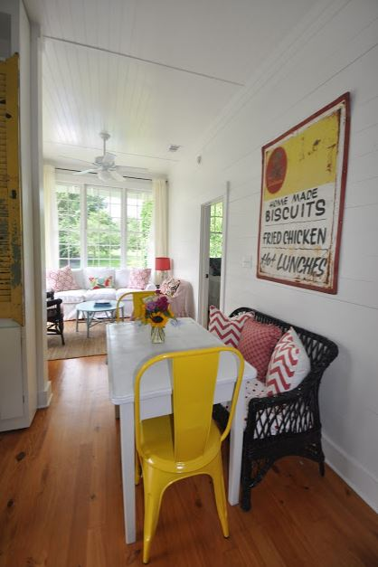
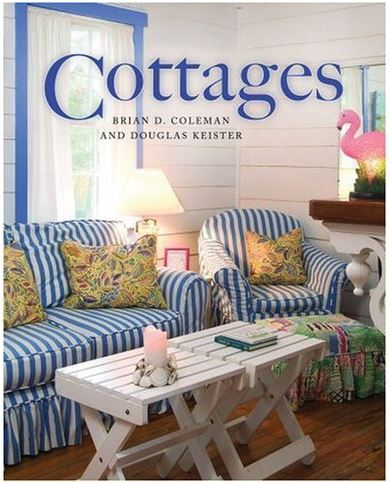

.png)
.PNG)
.PNG)
.PNG)
.PNG)
.PNG)
.JPG)
.JPG)
.PNG)
.PNG)


source
Happy end of the week! I promise this is my last post on Tybee Island (until we go back again. 🙂 ) But I can’t leave the island without writing about this one person… this very talented lady.
Jane Coslick is a house super hero. She is brave – with no fear whatsoever of color anywhere she goes and with no fear of a challenge either. She takes on ramshackle beach cottages that no one would look at twice and uses her magic powers talent to turn them into treasures that everyone now loves. She has rescued historic houses all over Tybee Island from demolition. (I have lost count, but I believe it is around 50 homes.) She has had her work featured in over 25 publications – Coastal Living (at least 7 times!), Southern Lady, Southern Living (multiple times), Old House Interiors, This Old House, Better Homes and Gardens, Cottage Living, La Vie Claire…and the list goes on. And then there are the books that feature her work:


The Southern Cottage: From the Blue Ridge Mountains to the Florida Keys
It all began over 25 years ago with this little cottage.
99 Steps was her first cottage – named for the distance between the front porch door and the beach. The 670 sq. ft. home was originally built by the Army Corps of Engineers back in the 1920’s. This was at a time when they were building a road from Savannah to Tybee, and temporary housing was needed for the workers. Here is the cute living room today:
Besides being on the cover of the book above, it has also been featured in Coastal Living, Cottage Living, and La Vie Claire magazine. Additionally, here is a link for an article about it in Waterfront Home and Design and one in Coastal Living. Jane carries her own line of paint (among other things on her website), and you can find all the matching colors used in the cottage here. You can see more rooms and find out information about renting it here.
Right next door to 99 Steps is another little house that Jane saved and transformed. I have heard it called Old Love, 99 1/2 steps, and The Luscious Little Cottage. Whatever name it goes by, the 425 square foot building is a happy bright pink color.
I’m going to call it Old Love. It was restored in 2009 and was featured in Cottage Living, La Vie Claire, and Coastal Living’s January 2009 issue, . Right behind the house is a separate 220 sq. ft. guest house bedroom that was once a train ticket booth.
Here is a recent picture of the guest house bedroom (called the Roost.)
And here is the living room in the main cottage.
There are two different articles you can read about the cottage here and here if you would like to learn more about it. And if you are interested in renting it for a vacation you can read about that here.
A few streets over you will find this bright green cottage.
This Jane Coslick project was originally constructed in 1936, and its interiors match is cheerful exterior.
Its screened porch is an equally happy place.
Key Lime Parrot is also available for a vacation rental here. It is located directly across the street from Memorial Park – a great place for families to play.
And would you believe that right behind Key Lime Parrot is yet another Jane Coslick cottage? Oh yes! You’ll find The Shrimp there. It too, has been featured in Coastal Living magazine, and it is available for rent here.
Take a look at the brightly colored kitchen…
And the fun living room.
Now travel down a few blocks and you will find Fish Camp, another rescued treasure. Built in 1924, it was once a run down fishing shack that most people would have liked to have seen torn down. Jane could see beyond the mess that it was, and she turned it into another cutie. Its bright blue color was chosen to match the morning glory flowers that grow in abundance in its yard and contrast with the sunshine-y yellow forsythia.
It is filled with pieces of art, and like its “cottage cousins,” it has been featured in a number of magazines and books. Here is a peek at a couple of the rooms in Fish Camp.
One of my favorite projects that Jane has transformed is The Palm cottage. It was built in 1935, and it made the cover of Coastal Living magazine in 2000. It is available for a vacation rental here.
Isn’t it precious looking?
On our trip to Tybee, my husband and I spent an afternoon just riding around looking for Jane Coslick cottages. The photographs of all the exteriors of the houses in today’s post are from that afternoon. (The interior photos are from websites.) There was one particular cottage that I really wanted to see. It was one of her recent projects…Cottage on the Green – a duplex built in 1929. We found it in a quiet area behind Officer’s Row. I hopped out of the car to take a couple of pictures of the exterior.
As I started to click the button on the camera, the woman who was vacationing there came out the door and excitedly said, “This is just the cutest place we have ever seen! Wouldn’t you like to come in and take pictures of the inside?” (I told you all I was in House Heaven on our Tybee trip. 🙂 ) So we went inside. She showed us around, and I took a couple of pictures. Obviously this stranger did not know we were coming so all of her family things are about, but you can see the beauty of the place. I was thrilled with the cottage and with the kindness and enthusiasm of this fellow house-lover.
This was unit A. Here are a couple of photos from the website.
Although this cottage is not on the beach, it is in a wonderful location on the island – so much so that the next time we go to Tybee this is where I want to stay. I really hope we can stay in Cottage on the Green – B. Take a look at it…just perfect!
an outdoor shower…
a living room in white with red accents and wicker!
and this super cute breakfast area!
There is one last Jane Coslick house I want you to see. I did not get to photograph it on our trip, and it is not a rental, but it is just sooooo charming. It is on Whitemarsh Island – not far from Tybee. How can you resist a white cottage with red shutters, window boxes, a picket fence, and a red bicycle?!
Loving this porch!
and one last photo..the living room. (I think I am starting to have a thing for signs. Blame Mary Kay Andrews!)
Too cute! There are plenty more gorgeous places on Jane’s website, so I hope you will go there and enjoy the eye candy. She has an online shop there as well with shutters, painted furniture, art, and home accessories. Just click here.
Before I say good-bye to Tybee and Savannah, let me show you who won the Savannah style book giveaway. It was this comment number:
and it belonged to this comment on the Movie Night: The Last Song post:
Congratulations Kathy!! 🙂 Just send me your mailing address on the site contact form at the top, and I will get your books in the mail to you. Thank you to everyone who left comments on all the posts. You folks are wonderful!!!!!
I hope all of you have a super fun weekend planned for this first weekend in May. We will be moving our daughter home from college for her summer break, and I have to wrap my brain around where to put all of her stuff. 🙁 Wish me luck!
What do you think of Jane Coslick’s cottages?
We’d love to hear!


.PNG)
Oh my! I have loved Jane’s work I have found through Pinterest & other posts. I just told my husband that I have found my Christmas gift…a vacay to Tybee. He he thinks I am kidding. We went to Savannah two years ago in February, but it was too cold to make it out to Tybee. …Visions of beach cottages dancing in my head
I have followed Jane for years and went to the last two tours of homes in December to see these lovely gems in person. I came to your blog from hers! Jane is truly an inspiration to anyone who loves color….which I certainly do.
———————————————————————–
Thank you for coming over from Jane’s site Connie. That was so sweet of Jane to share my blog there. Lucky you getting to see all those cute cottages dressed up for the holidays! If she does it again this year, I think I am going to have to fit a trip to Tybee in my December schedule. 🙂 She certainly is inspirational!
Kelly
Kelly,
Thanks for sharing all of Jane’s wonderful cottages with us! My favorite is the Key Lime Parrot! How sweet that Jane found your site and commented. Good luck with moving your daughter back home.
———————————————————————-
I was so amazed that she found it and left a comment! Totally made my day! We got all of daughter’s things home and she has been washing laundry and unpacking and trying to figure out where to put it all. Her closet is going to have to have a major reorganization this summer!
So, I’m about to leave a comment, but first I have to read all the previous responses. And, there’s one from the indomitable Jane, herself. OMG! The next time you go to Tybee, you may get to meet her. (Take me, take me, with you…..)I have a Pinterest board simply called, “Jane Love”. She sure has a way with bringing out the beach, serenity, as well as whimsy, in her decorating, doesn’t she? You and your husband certainly went to a lot of time and effort to get all these pictures for this wonderful post – appreciate that. We finally had a real spring-like day here in southern New England, sixties, sunny, and everything starting to burst forth in bloom. Add, in the beach vibe from here, and I am ready for summer.
———————————————————————–
I know! Can you believe it??? My husband was the first one to read the comments this morning. He came into the closet where I was getting ready and held out his smartphone to me saying, “Um, Kelly, you might want to take a look at THIS comment.” I was afraid it was some spammer with something not very nice! LOL
I wish I could take you with me to Tybee. We would have such fun! I read my husband YOUR comment a few minutes ago, and he said, “I like this Paula girl.” Thanks for appreciating the photos, but it really was fun going all over the island. If I had been in better shape, I would have done it all from a bicycle.
So glad you had a beautiful spring day there. We did as well, and we spent it moving our daughter from college – which is actually better than the rain we moved her in with. Bring on the summer!!
Kelly
Kelly
Wow thank you so much for this AMAZING post. I am so glad to find your blog and so sorry I did not get to meet you when you were here. Next time …let me know when you are coming. Cottage on the Green is being photographed for Coastal Living Magazine this coming week. so excited .It will be in the November Cottage Issue of that ‘great escape’ magazine. I would love to share this post on my blog..
————————————————————————
Oh my goodness!! Jane I am just thrilled that you found the post, and you can see from the other comments that you have big fans here. 🙂 We all LOVE your work. (Linda at Lime in the Coconut should get the award for your biggest fan!) How fun that Cottage on the Green will be in Coastal Living. I am happy AND sad for it. Happy, because I know all the readers will find it to be absolutely charming, but sad because the more people that know about it, the less openings it will have for us to vacation in! 🙂 (Yes, I am being selfish!) Please do share the post on your blog. I think many of your readers will enjoy seeing several of your cottages altogether in one article. Doing a new board devoted to your work on my pinterest page was on my list of things to do this morning. I think you will garner more fans from that as well. I thought of you for a nearby building that had been on the market for awhile. It is an old clapboard church – built in 1938, that I had hoped someone would adopt and breathe life into – would make a precious wedding chapel. http://www.loopnet.com/Listing/14407084/Highway-96-Houston-Lake-Road-Warner-Robins-GA/ It has had its steeple taken down, and it looks as if someone is about to move it…so I am crossing my fingers that it is being taken some place good.
Keep up your amazing work, and if you ever need assistance in the middle Georgia area, please don’t hesitate to call on me. I hope we can meet the next time we are in Tybee.
Enjoy your weekend!
Kelly
A Gem…dare I say KING {queen} among cottage preservers. She is a true Cottage Humane Society.
…And don’t even get me started on her work and love of animals.
Bowing to the Queen. <3
———————————————————————
Linda, I always love to read your comments on Jane’s blog. You just crack me up! And you are so right! She is THE queen of cottage preservationists.
Thanks for stopping by. I hope you have a great weekend!
Kelly
WOO HOO!!! Kathy winning makes me just as happy as if I won!!!!
These beach houses are all drool worthy……
Have fun moving Princess Elsa home!! I have 35 cousins coming for a reunion tomorrow and 4 of them just called from Charlotte and said they are so excited they are showing up at 10 instead of 12. Oh may….think I best go to bed as I’m sure I’ll have to wipe down the pollen on the porch ONE more time in the morning. Here’s to fun times on the first Saturday of May!!!!
———————————————————————-
Oh, Katrina, I wish I could have sent the prize to both of you since the two of you are always so funny! (Maybe Kathy will share. 🙂 ) Good luck with your family reunion today. Eat a bite of EVERY dessert for this sugar loving girl here. Hopefully all the rain we have had will have washed away our blanket of pollen here in the South. Enjoy your day and all your relatives!
Kelly
I hate to see your Tybee posts end. I have enjoyed them so much. Thanks for featuring Jane Coslick. I have been a fan of hers for a few years…..
———————————————————————
Isn’t her work just great?! And it seems to me that it just keeps getting better and better. It must be a tremendous amount of hard work, but she also produces the most beautiful places. Thank you for reading and leaving your comments, Andrea.
Kelly
Oh, to have a coastal little home to enjoy, if only for a week. It would be so fun. I would take any of them. I use to subscribe to Coastal Living. That was my “take me away” publication. How fun that the gal saw you and gave you a tour. I like the living space with the gorgeous big windows, red, wicker……What’s not to love. Thanks for the drool fest Kelly. Wonderful post.
Debra
————————————————————————-
Yes, those were definitely some droolworthy places! I am glad you enjoyed it Debra. Read the comments a little further down, and you will see that Jane tells us that Cottage on the Green will be featured in Coastal Living this November! You will need to look for it in your escape magazine then. 🙂
Enjoy your weekend!
Kelly
Kelly,
I liked the last place best, it must be the red and white color theme. Does Jane keep all of the houses and rent them out or does she fix them up and then sell them?
It’s been fun seeing more of Tybee Island.
Have a wonderful weekend.
xo,
Karen
————————————————————————
That red and white was just so cute, wasn’t it? I don’t know exactly how the ownership works. I do think most of them are owned by others..not sure if she buys them first and then resells them or if someone else buys them and hires her to do the work. Probably a combination of things.
I hope you have a great weekend, Karen! At least we have sunshine to move our daughter home for her summer break from college.
Kelly
It’s always so neat when you find these places– makes them seem more real, somehow, if that makes sense. You have a way of making us feel like we’re discovering them right along with you! You saved the best for last with that cottage with the red shutters. The others felt like vacation, but that one definitely has a nice “home” vibe.
———————————————————————-
I know exactly what you mean Vicki. If an ordinary person like me, can take photographs of these places that all of us have only seen in magazines (which often seem separated from the reality of life), then others can see and enjoy them as well. Makes perfect sense! That last cottage certainly does feel like a “home”..and it is. There is a lovely story about the soul of that house here: http://www.savannahmagazine.com/2013/07/02/a-safe-harbor/ I think you will enjoy the story behind the cottage.
Have a weekend full of fun!
Kelly
I bought her book at Seaside Sisters when visiting Tybee. Did you know MKA has a booth there? I think the iron you bought was probably from MKA herself!
———————————————————————
I should have purchased the Cottages book when we were there, too. (I do have the other one though.) Yes, the iron was in MKA’s booth. I just had to come home with something from her booth! Isn’t Seaside Sisters one of the most fun places to shop?!
Kelly
I have long loved Mermaid Cottages and have checked some of those books out of the library!
———————————————————————
Barbara, the Mermaid Cottages are just perfect beach homes, aren’t they?! Glad you have enjoyed the books. I don’t have the Cottages one, but I plan on getting it soon. Thanks for visiting the blog!
Kelly
You are right! Jane is brave in her use of colors! She is no “Plain Jane,” is she? I love it! Now if only I can be so bold! haha. I’m working on it. Now if I could only own an beach cottage. I’m working on that too! The bold colors will probably come before the beach cottage. lol
———————————————————————-
Jayne, your comment made me laugh out loud! Too funny! Yes, I would think that paint colors would be acquired more easily than a beach house would. (I am working on getting that beach house too, but I don’t think it will be here any time in the near future. 🙁 )
Kelly
Yay! I am so excited to win! Thank you! Thank you! Thank you! I have tried to fill out the form to send you my mailing address but I keep getting an error message. Can you email me and I will reply with the address? (P.S. I have been thinking that Louvina (above) might be my new best friend. I always love her comments.) Now, I need to go back and swoon over these colorful beach houses some more. Thank you again!
———————————————————————–
Congratulations girl! Your address made it through and the package will be on its way on Monday. I hope you enjoy all the books…be sure to bake some of those delicious cupcakes in the Back in the Day cookbook (and then eat some for me!) And I am glad you liked the Jane Coslick cottages. Be sure to see her comment (yes, HER comment!) further down the blog post page.
I was SO EXCITED when I saw that today’s post was about Jane Coslick’s work on Tybee!! I discovered her several years ago and am a BIG FAN. I just love all of the bright colors that she uses in her decor. Her work is what inspired me to paint my footed tub TURQUOISE and the beadboard paneling that surrounds it YELLOW. Thank you for sharing her beautiful cottages with us.
————————————————————————
Kathy your bathroom sounds bright and cheerful, and I know Jane would LOVE it! She made a comment below on the post, and I know she saw yours. So thank you for reading and for making both mine and Jane’s day with your sweet words!
Kelly
These are exactly what beach cottages are supposed to look like!! Thanks for sharing.
——————————————————————–
Arlene you are quite right. The little cottages look like what a beach cottage should – bright and cheery – and fun! Thank you for reading and adding to the conversation. Hope you are enjoying your weekend.
Kelly
What a delightful post to wake up to on a stormy Central FL morning, sitting on my own beach cottage (recently remodeled),screened upstairs porch/patio listening to the other early risers who are singing His praises!! I am so blessed to be able to enjoy so many of God’s creatures!! Just love all the bright colors in these cottages! Would never have thought to use the combinations Ms. Coslick used –what an eye for design!! So happy that Kathy won your wonderful give away!! (can’t believe it has been a year since I won a basket from “TOTH”) Also the first response to today’s post–Anneli from Sweden–what a delightful surprise to see she has a contract on a Beach Cottage on Coronado –where I was born 68 years ago! Small world indeed!! 😉
——————————————————————-
Isn’t it a small world??? I think it is absolutely amazing that someone in Sweden could actually find my blog and read it! Sounds like you were having a wonderful morning. I am soooo happy to see the sunshine out today. Last week was dreadful!
Kelly
Hi Kelly! What a great post! I loved seeing all these charming beach houses. All the fun, bright colors are great. I don’t think I would want to live with that much color, but it sure would be fun to vacation with it for a while. I think my favorite is the same as yours. I love that red and white living room with the huge windows and wicker. I also love those cool twin beds. We’re heading to the beach in North Carolina in June. I can’t wait!
Have a great weekend!
———————————————————————-
Thank you Jill! I appreciate you reading and leaving your sweet comments here. All those windows in that living room were wonderful weren’t they?! Those twin beds came from Land of Nod. I thought about getting some of them for here too. Lucky you going to NC for a beach trip! I know you will enjoy that.
Kelly
Hello Kelly!
I truly enjoyed this post since I just signed a contract on a Beach Cottage in Coronado, San Diego built in 1928 and I need tons of inspiration…We will move in in June and I think I will do the cottage in white and blue.
Thank you for sharing!
Kind regards from Sweden,
Anneli
———————————————————————-
Blue and white will be perfect for your beach cottage in Coronado! There will certainly be tons of inspiration everywhere right now for summer blues and white. Have fun decorating it! (I love the pink flowers spilling over the fence at the entrance to your cottage. Soooo charming!)
Kelly